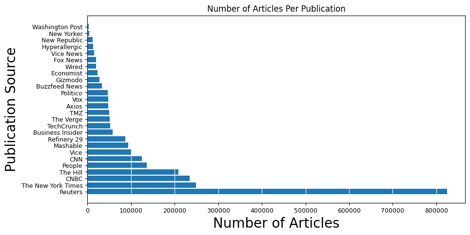
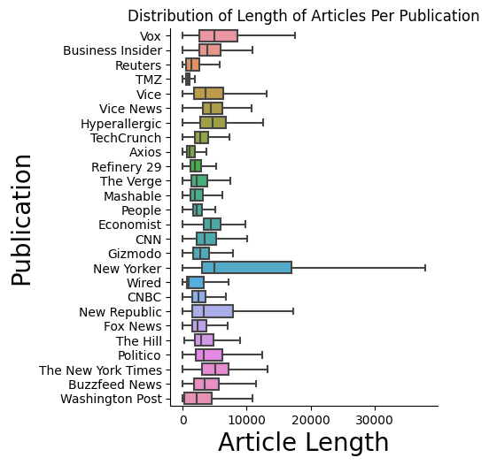

Purpose and Pipeline
The purpose of this project is simple, create an interactive visualization so that people can better understand the differences between news publications. We must clear the mind of the past.
Intially, I attempted to craft my own dataset of news articles by scraping sites such as CNN and Fox News.
This proved very difficult, as creating web scraping tools for each site individually just wasn't feasible for the time I had for this semester. Instead, I elected to use
another data set called All The News 2.0. It contains 2,688,878 news articles from 27 American publishers, spanning from January 1, 2016 to April 2, 2020, it was created by Andrew Thompson and is a total of 8.8 GB uncompressed.
Intially, this dataset proved very unweidly to work with, as pandas, the most popular dataframe library for python, loads the whole dataset into memory when you call it, and makes copies of the dataset
when you need to perform actions on it. So, for the visualizations for this project, I downsampled by data so that there are 500 articles from each of the 27 publications. This portion of the project is focusing on visualizations only and not the overall analysis I did for this project.
If you wish to read more about the work I have done for the analysis portion, you can read more at my github.
The Data
While intially exploring the data, I generated a few graphs to help get a better grasp of what exactly we were looking at. The first graph
is showing the total number of articles in the dataset for each publication.

This graph is showing the distributions of the length of the articles per publication. Outliers are not shown for clarity.

Some Interesting Notes
A couple other interesting things to note about the data is that: for both TMZ and The Economist there are no authors listed. Reuters, despite having several
hundred thousand more documnets listed in this data at around 830,000 articles, only has 27,178 unique authors and 574,489 NaN, while The New York Times, which has around 250,000 articles, has 30,653 unqiue authors and 20,476 NaN values.
This could be due to how the data was scrapped, how authors are credited, or that many of the articles are simple very short and never had the author listed.
A few other things to keep in mind: the point of this project was to analyze news specifically; however, this dataset includes publications that are very specific in nature, and most certainly skew the results. Given that this
demonstration is for visualization only, I believe this is ok, but in the future I would like to remove these publications. A great example of this is TMZ. The inclusion of TMZ, while it only has 49,504 articles out of 2.7 million, it is arguably not even a
news source in the traditional sense. This is also somewhat true of The Hill. It only covers one topic, that being politics, similar to how TMZ only really covers celebrity interactions. A few others to mention are: Refinery 29, Hyperallergic, and Tech Crunch.
The Embedding Projector
This projector is a gensim doc2vec model that was trained on a sample of 500 documents from each publication. Here you can visualize the different articles using different
dimensionality reduction techniques. My personal favorite is UMAP, as it clusters the articles much better than PCA or tSNE. You can also view the points as different colors based on the
publication they are from. If you click on a point, you will see its URL at the top right, and can read it from there. You can also see a list of the the top 10 closest articles (according to this model) on the right side, and compare the two if you wish.
It should be noted that this visualization is not as accurate as I would have liked, as it was trained on a small corpus of documents, however, this is just a demonstration of the visualization technique used.
This was built using tensorflow's embedding projector.
Conclusion
This visualization shows just how different news sources can be. An interesting find, if you notice, buzzfeed articles tend to cluster extremely close togther. Another interesting find is that topic seems to be a bigger
feature than authorship. It is worth further investigation to seperate those two features and see how much of a difference they make. Overall, there is some distinction between articles, however, this project doesn't decern exactly where they come from.
It could be topic, author or even formatting. While it's an interesting visualization, a much more deep dive is need to fully understand the differences between publications, as well as what makes the news.